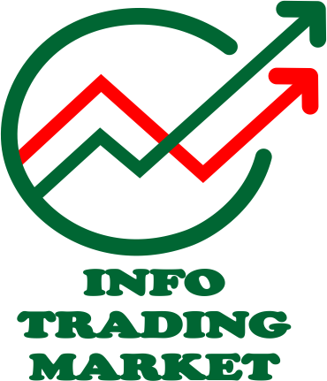
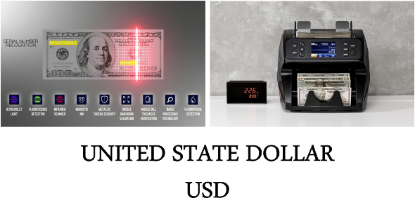
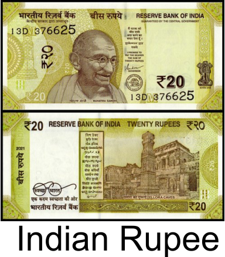
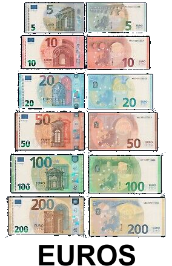

Forex (or FX) refers to the foreign exchange markets, where currencies are traded. It is the biggest and fastest growing financial market in the world, with an average daily turnover of almost $2 trillion – many times the total traded volume of the US stock exchanges.
The forex market consists of a worldwide wired network of buyers and sellers of currencies, with trading all done over-the-counter (OTC), which means that there is no central exchange and clearinghouse where orders are matched. If you are looking for 24-hour action, you can find it in this global trading system, where no physical barriers exist and activity moves seamlessly from one major financial centre to another.
A reason why there is a veil of mystery over forex is that the market was once the exclusive playground of banks, hedge funds, corporations and financial institutions, where money changed hands for commercial and speculative purposes. However, forex has now expanded and is easily accessible to all traders with the rapid emergence of online currency trading platforms. Many of these platforms are wellequipped with free charting software, real-time news-feeds and easy-to-use order placing systems.
The wide availability of sophisticated technology has spawned a whole new level of foreign exchange, where self-directed (so-called “retail”) traders can easily buy and sell currencies through an internet connection with a click of the mouse, dealing with invisible counter-parties on the other side of the transaction. This group of people (also known as speculative traders) engage in trading forex for the sole purpose of making profits.
 "Welcomes you to the new world of online forex trading."
The rapid fluctuations of currency exchange rates are what attract speculators to the forex market as currencies are highly sensitive, and thus react very fast to changing economic conditions of countries or regions, changing interest rates and political happenings around the world. Sometimes central banks of countries attempt to intervene in the forex market if the policy-makers feel that their country’s currency is too strong or too weak for their own good. All these factors lead to high volatility of currency prices, which can be taken advantage of by traders who speculate on the direction and magnitude of the current and future price move.
I would like to point out that while movements in certain currency pairs can be quite volatile in nature, most major currencies generally move less than 1% daily, which is much lower than that of active stocks, which can easily move between 5-10% per day. For a rough guide of currency pairs and their relative volatility, refer to Figure 1.1 under “Warming Up” in the later part of this chapter.
Forex has increasingly become an extremely attractive alternative asset group for speculators to trade, in addition to the usual staple of stocks and futures.
Anyone can trade forex, but not every one can be profitable. That’s the rule of any game – not every one can win.
There are many opportunities for you to profit from the forex market. For example, if you have an opinion that the Euro is going to rise in value against the US dollar, you can “long” the EUR/USD, which means to buy the pair in the hope that the exchange rate will go higher. You would then make a profit if EUR/USD appreciates, as you would be able to sell at a higher price than you have bought it at before. But if you think that the Euro will weaken against the US dollar (i.e., EUR/USD will go down), you can initiate a trade by selling EUR/USD (known as going “short”), so that if EUR/USD later does go down in value, you would be able to make a profit by buying back at a lower price.
When you hear someone talking about the “forex market”, the chances are that he or she is referring to the spot forex market. The spot forex market is where a trader buys or sells a currency at the current price on the date of the contract for delivery within two business days. Of course, for most speculators, there is no real delivery of actual cash, and the way this is done is through rolling over of positions [more of this will be explained under “Warming Up” later in this chapter].
This and many other peculiarities give the spot forex market its own unique characteristics which make it an interesting market to trade.
I explain below some of the main characteristics of the spot forex market.
The forex market operates worldwide and non-stop for five and a half days a week. Every day it moves along with the sun: beginning in Sydney, to Tokyo and then Singapore, through the late Asian afternoon when London and other European centres open just as Asian markets are preparing to close. The European open initiates the heaviest trading volume of the day and by afternoon in Europe, New York opens, followed by Chicago, then Los Angeles. Just as sunset signals the closing of the US market, sunrise in Sydney starts a brand new trading cycle all over again.
By contrast, with the stock and futures markets, one would need access to electronic communication networks (ECN) for pre-market trading, or would have to wait till the markets open – and open sometimes with a gap if there has been news while the markets are closed. Since the Asian session is usually quiet for currencies like the Euro or Swiss Franc, I use this time to do market research, calculate and set up my trades for the afternoon when the European markets open. This gives me ample time to digest the news of the night before and the morning itself, which allows me to anticipate the movements of currency pairs later on in the day.
The forex market is the planet’s most liquid market. With more than $2 trillion changing hands every day, traders have no worries about liquidity when it comes to trading any of the big-economy currencies: USD, GBP, EUR, CHF, JPY, CAD, AUD and NZD. This is especially the case when they are paired up with the US dollar – at least 80 percent of foreign exchange transactions have a dollar leg.
The London market accounts for almost one-third of the global total daily forex turnover, and thus tends to be the most volatile session of the day, with the majority of forex transactions completed during the London hours due to the market’s liquidity and efficiency.
The unparalleled liquidity of forex translates into very little or almost no slippage when you trade during normal market conditions (not during news); there is rarely any discrepancy between the displayed price and the execution price.
Since currencies are always traded in pairs, when you are bullish on one currency, you are bearish on the other – and vice versa.
For example, if you are bullish on GBP/USD, you go long of it by buying Pounds and selling US dollars; but if you are bearish, you can short it by selling Pounds and buying US dollars. You can short a currency pair anytime you want, without any restrictions. This is different from some stock markets whereby short-selling is only allowed on an uptick, so it can be quite tedious and time-consuming for stock traders to have to wait and see the stocks going down while looking out for an uptick before they can short.
Being able to go long or short on currency pairs anytime is a tremendous advantage as forex traders are able to profit from both up and down trends anytime, and this translates to a more efficient and instant order execution. This is especially valuable in the financial markets where time equals money, and even a second’s delay could cost you money.
Who doesn’t like trading on other people’s money?With possible leverage of up to 400 times, the forex market indisputably offers the highest amount of leverage compared to other markets. This high end of leverage is usually offered to mini trading accounts, due to the smaller lot sizes and lower minimum account deposit requirements. With a 100 times margin-based leverage, that is typically offered for standard-sized accounts, forex traders are allowed to execute trades of up to $100,000 with an initial margin of only $1000.
It is important to note that while a high degree of leverage allows traders to maximise their profit potential, especially on a small price move, the potential for loss is equally large. Many people mistakenly shy away from trading forex after hearing that it is a highly leveraged trading instrument, but these people do not realise that leverage is and can be customised to the individual trader’s own preference. If you tend to be more conservative with risk-taking, you may choose to use no more than 10 times leverage, or none at all. For those of you with more aggressive risk appetite, you can choose a higher amount of leverage in your trades. The choice of leverage lies with you.
Since forex transactions are done the OTC way, with traders dealing directly with the market maker or other parties, exchange and clearing fees are not applicable to forex trading. Market makers typically do not charge commissions on trades that are executed through them, while Electronic Network Communications (ECN) do charge a small commission on top of the bid-and-ask spread.
Due to the high level of liquidity in the market, currency pairs usually have very tight spreads especially during normal market conditions when no news is scheduled for release.
Everything You Need to Know About Cryptocurrency
Whatever your learning style, there iss a course that can help you become a crypto expert. With Udemy, you will be able to take courses that span over 65 languages and cover just about anything you would want to know about cryptocurrency. You will also be able to set up a crypto wallet to hold your digital coins and choose an exchange that fits your trading needs. Learn more about Udemy and sign up today.
The following sections will discuss some of the major mining platforms and utilities that make the mining procedure easy cutting much of the technical setup.
Before initiating, make sure you have a cryptocurrency wallet and mining software that supports your choice of cryptocurrency.
To get started click on any of the mining platform with Blue Text: -
Without further ado, let us start with some of the best mining platforms.
Ecos calls itself a full-fledged crypto investment platform. And when you see their breadth in the crypto domain, you might think the same.
It has a cryptocurrency wallet, exchange, cloud mining contracts, and crypto portfolios for investors. Besides ECOS has a convenient mobile app. It is available at App Store and Google Play.
However, their cloud mining contracts are only for Bitcoin mining. You can create a contract ranging from USD 75 to USD 50000 valid for 15 months to 50 months.
They accept payments from cards and in a few cryptos: BTC, ETH, XRP, and LTC.
Interestingly, you can purchase a Bitmain Antminer from their website. And it will mine Bitcoins at their mining facility. Finally, you have the choice to get it shipped to your address at your convenience. They pay daily for cloud mining and miner hosting contracts. All detailed statistics you can see into your account.
The main feature of the ECOS platform is that they provide a free cloud mining contract for 1 month to test their platform!
StormGain is one of the simplest mining platforms. It has a one-click mining process that does not eat from your local resources, and it is free. But there is a catch!
As advertised, this is an all-in-one crypto platform. You can buy, sell, trade, exchange, and mine. Mining is limited to Bitcoin and is done on StormGain servers.
Now the catch is, first, mining is done in 4 hours shift. So, you have to click to activate the miner every four hours. In addition, if you are not trading on StormGain, then mining speed is slow to the extent that you would be mining a minuscule 0.5 USDT (~USD) per mining session.
And second, you have to increase your trading level to boost your mining speed. Notably, there are six more levels in addition to the starter. The highest level is VIP 3 for traders having 75,000,000 USDT trading volume per calendar month. With this peak level, you can have a free mining income of close to 16,000 USDT per month.
Trading, exchange, and withdrawals fees are specific to coin type. But, the deposit is free of any commission.
StormGain has native applications for Android and iOS. You can also use it as a web application.
Conclusively, StormGain is suitable only if you do-it-all with crypto. Keep reading to know about the crypto platforms if you are interested in mining alone.
Hashlists offers such cloud mining services. They believe that everyone should have access to simple passive income through cryptocurrency. To ensure that this is feasible, it provides users with various plans. Contract mining options include LTC, ETH, BTC, FIL, and DOGE MINING, with prices ranging from $8 to $6,500.
More than 240,000 users use Hashlists! The secret of success lies in stable profit accrual, favorable terms of cooperation, and flawless work.
Some of the features include below.
Sign up and get $8 to get it started today.
Slushpool is an excellent place to step in for anyone aiming for pool mining.
It is one of the veterans in bitcoin mining presently mining about 3.5% of all bitcoins.
SlushPool charges a 2% pool fee for using its platform. It also has a 0% pool fee option for some supported ASIC miners.
It also has an official mobile app for iOS and Android. The app can be used as an account monitoring tool. SlushPool clearly states that you can not mine with its mobile app.
Its platform has two-factor authentication (2FA) for added security. In addition to the regular one-time passwords, you can use FIDO2 compatible physical authentication devices like the TREZOR or Yubikey.
While the minimum payout is 0.001 BTC, you pay a payout fee of 0.0001 BTC for transactions lower than 0.01 BTC. The same goes for payouts of Zcash.
SlushPool has Bitcoin mining servers across the continents: USA, Europe, Canada, Japan, and Singapore. Zcash mining servers are located in the USA and Europe.
Next on the crypto mining platforms list comes Awesome Miner, which is similar to Cudo Miner. It is a mining management utility for Windows and Linux users.
It can be used free of cost for 2 miners. Afterward, its paid plan kicks in, starting with USD 4 per month billing annually.
It also has a cloud subscription that offers mining management from anywhere with just an internet connection. This service starts with USD 4 per month, billing annually for 10 miners. This service has a 30-days trial period if you have less than 400 mining rigs.
There are also monthly plans which are a tad more expensive than their yearly counterparts.
Awesome miner seems an excellent solution for huge mining farms. It has rich documentation and help sections to assist users in every possible way.
Zionodes is hands down the most accessible BTC mining platform we came across. This platform comes in with the smoothest UI and helps you onboard and start mining merely in seconds. The best thing is their dashboard is dynamic; you see your earnings updated every minute.
The rise of this platform can mainly be attributed to its strategic partnerships with ViaBTC, and many more prominent players in the mining industry. Such strategic partnerships ensure their foothold in the remote bitcoin mining domain.
We recommend this platform because, once you purchase from them, you are the sole owner of the hardware, and you do not have to worry about the availability of the computing power. Hosting the hardware in the data centers helps you gain an astonishing uptime of 99.99%, so effectively, there are no maintenance breaks.
They accept multiple crypto payment methods such as USDP, TUSD, DAI, BUSD, USDT, and USDC. The additional benefit of being able to add those coins across multiple networks such as Ethereum, Binance Smart Chain, and TRON. Zionodes has its data center across North America, South Africa, Europe, and Russia.
Furthermore, if you are planning to bulk order from the trading desk you can make the payment with just a few clicks using the MetaMask USDT ERC token.
Conclusively, Zionodes is a better alternative to various cloud mining platforms as it works on remote mining modules where you are the owner of the miner and can operate it according to your convenience.
Hint! Sign up to the marketplace and drop them a line, and they might provide you with free trial access to the miner of your choice.
Bitfly is where you can mine six crypto coins: ETH, ETC, ZEC, BEAM, RVN, and ERG. Each one has a different domain name and set up instructions matching the specific coin.
It charges a standard 1% pool fee irrespective of the coin you mine. It has 3rd-party apps for monitoring supported on Android and iOS.
Bitfly has specific configuration guides depending on the operating system, graphic card, and coin.
Once you click Start Mining, it takes you to the server details and mining software options. After that, you just download the preferred mining utility and set up the mining software to start mining.
It has mining servers in Europe, Asia, and the USA.
Bitfly boasts of instant payouts. It also has a Discord channel, a place to share knowledge with fellow miners. This can be useful if you are new to the mining space.
This is a unique concept to mine cryptocurrency while browsing. It has mining features built-in.
CrytoTab Browser promises automatic algorithm switching to boost profits. Similarly, it also assures of no overheating or battery drain while browsing with its in-house browser.
It converts all the rewards in Bitcoin. The minimum payout listed is 0.00001 BTC. You can earn by your mining hardware as well as receive commission for referrals.
This browser is available for Windows, Mac, Android, and iOS.
This is recommended for non-tech users who wish to have a minimum taste of cryptocurrency mining.
Everything You Need to Know About Cryptocurrency
Whatever your learning style, there is a course that can help you become a crypto expert. With Udemy, you will be able to take courses that span over 65 languages and cover just about anything you would want to know about cryptocurrency. You will also be able to set up a crypto wallet to hold your digital coins and choose an exchange that fits your trading needs. Learn more about Udemy and sign up today.
  
| PLACE | CURRENCY | CODE ALPHABETIC | NUMERIC |
| AFGHANISTAN | Afghani | AFN | 971 |
| ALBANIA | Lek | ALL | 008 |
| ALGERIA | Algerian Dinar | DZD | 012 |
| AMERICAN SAMOA | US Dollar | USD | 840 |
| ANDORRA | Euro | EUR | 978 |
| ANGOLA | Kwanza | AOA | 973 |
| ANGUILLA | East Caribbean Dollar | XCD | 951 |
| ANTARCTICA | No universal currency | ||
| ANTIGUA AND BARBUDA | East Caribbean Dollar | XCD | 951 |
| ARGENTINA | Argentine Peso | ARS | 032 |
| ARMENIA | Armenian Dram | AMD | 051 |
| ARUBA | Aruban Guilder | AWG | 533 |
| AUSTRALIA | Australian Dollar | AUD | 036 |
| AUSTRIA | Euro | EUR | 978 |
| AZERBAIJAN | Azerbaijanian Manat | AZN | 944 |
| BAHAMAS | Bahamian Dollar | BSD | 044 |
| BAHRAIN | Bahraini Dinar | BHD | 048 |
| BANGLADESH | Taka | BDT | 050 |
| BARBADOS | Barbados Dollar | BBD | 052 |
| BELARUS | Belarussian Ruble | BYR | 974 |
| BELGIUM | Euro | EUR | 978 |
| BELIZE | Belize Dollar | BZD | 084 |
| BHUTAN | Indian Rupee, Ngultrum | INR, BTN | 356, 064 |
| BOLIVIA | Boliviano, Mvdol | BOB, BOV984 | 068 |
| BOSNIA & HERZEGOVINA | Convertible Marks | BAM | 977 |
| BOTSWANA | Pula | BWP | 072 |
| BOUVET ISLAND | Norwegian Krone | NOK | 578 |
| BRAZIL | Brazilian Real | BRL | 986 |
| BRITISH INDIAN OCEAN TERRITORY | US Dollar | USD | 840 |
| BRUNEI DARUSSALAM | Brunei Dollar | BND | 096 |
| BULGARIA | Bulgarian Lev | BGN | 975 |
| BURUNDI | Burundi Franc | BIF | 108 |
| CAMBODIA | Riel | KHR | 116 |
| CANADA | Canadian Dollar | CAD | 124 |
| CAPE VERDE | Cape Verde Escudo | CVE | 132 |
| CAYMAN ISLANDS | Cayman Islands Dollar | KYD | 136 |
| CHILE | Chilean Peso Unidades de formento | CLP 152 | CLF 990 |
| CHINA | Yuan Renminbi | CNY | 156 |
| CHRISTMAS ISLAND | Australian Dollar | AUD | 036 |
| COCOS (KEELING) ISLANDS | Australian Dollar | AUD | 036 |
| COLOMBIA | Colombian Peso Unidad de Valor Real | COP 170 | COU 970 |
| COMOROS | Comoro Franc | KMF | 174 |
| CONGO, THE DEMOCRATIC REPUBLIC OF | Franc Congolais | CDF | 976 |
| COOK ISLANDS | New Zealand Dollar | NZD | 554 |
| COSTA RICA | Costa Rican Colon | CRC | 188 |
| CROATIA | Croatian Kuna | HRK | 191 |
| CUBA | Cuban Peso | CUP | 192 |
| CYPRUS | Cyprus Pound | CYP | 196 |
| CZECH REPUBLIC | Czech Koruna | CZK | 203 |
| DENMARK | Danish Krone | DKK | 208 |
| DJIBOUTI | Djibouti Franc | DJF | 262 |
| DOMINICA | East Caribbean Dollar | XCD | 951 |
| DOMINICAN REPUBLIC | Dominican Peso | DOP | 214 |
| ECUADOR | US Dollar | USD | 840 |
| EGYPT | Egyptian Pound | EGP | 818 |
| EL SALVADOR | El Salvador Colon, US Dollar | SVC 222 | USD 840 |
| ERITREA | Nakfa | ERN | 232 |
| ESTONIA | Kroon | EEK | 233 |
| ETHIOPIA | Ethiopian Birr | ETB | 230 |
| FALKLAND ISLANDS (MALVINAS) | Falkland Islands Pound | FKP | 238 |
| FAROE ISLANDS | Danish Krone | DKK | 208 |
| FIJI | Fiji Dollar | FJD | 242 |
| FINLAND | Euro | EUR | 978 |
| FRANCE | Euro | EUR | 978 |
| FRENCH GUIANA | Euro | EUR | 978 |
| FRENCH POLYNESIA CFP | Franc | XPF | 953 |
| FRENCH SOUTHERN TERRITORIES | Euro | EUR | 978 |
| GAMBIA | Dalasi | GMD | 270 |
| GEORGIA | Lari | GEL | 981 |
| GERMANY | Euro | EUR | 978 |
| GHANA | Cedi | GHC | 288 |
| GIBRALTAR | Gibraltar Pound | GIP | 292 |
| GREECE | Euro | EUR | 978 |
| GREENLAND | Danish Krone | DKK | 208 |
| GRENADA | East Caribbean Dollar | XCD | 951 |
| GUADELOUPE | Euro | EUR | 978 |
| GUAM | US Dollar | USD | 840 |
| GUATEMALA | Quetzal | GTQ | 320 |
| GUINEA | Guinea Franc | GNF | 324 |
| GUYANA | Guyana Dollar | GYD | 328 |
| HAITI | Gourde, US Dollar | HTG 332 | USD 840 |
| HEARD ISLAND AND McDONALD ISLANDS | Australian Dollar | AUD | 036 |
| HOLY SEE (VATICAN CITY STATE) | Euro | EUR | 978 |
| HONDURAS | Lempira | HNL | 340 |
| HONG KONG | Hong Kong Dollar | HKD | 344 |
| HUNGARY | Forint | HUF | 348 |
| ICELAND | Iceland Krona | ISK | 352 |
| INDIA | Indian Rupee | INR | 356 |
| INDONESIA | Rupiah | IDR | 360 |
| INTERNATIONAL MONETARY FUND (I.M.F) | SDR | XDR | 960 |
| IRAN (ISLAMIC REPUBLIC OF) | Iranian Rial | IRR | 364 |
| IRAQ | Iraqi Dinar | IQD | 368 |
| IRELAND | Euro | EUR | 978 |
| ISRAEL | New Israeli Sheqel | ILS | 376 |
| ITALY | Euro | EUR | 978 |
| JAMAICA | Jamaican Dollar | JMD | 388 |
| JAPAN | Yen | JPY | 392 |
| JORDAN | Jordanian Dinar | JOD | 400 |
| KAZAKHSTAN | Tenge | KZT | 398 |
| KENYA | Kenyan Shilling | KES | 404 |
| KIRIBATI | Australian Dollar | AUD | 036 |
| KOREA, DEMOCRATIC PEOPLE’S REPUBLIC OF | North Korean Won | KPW | 408 |
| KOREA, REPUBLIC OF | Won | KRW | 410 |
| KUWAIT | Kuwaiti Dinar | KWD | 414 |
| KYRGYZSTAN | Som | KGS | 417 |
| LAO PEOPLE’S DEMOCRATIC REPUBLIC | Kip | LAK | 418 |
| LATVIA | Latvian Lats | LVL | 428 |
| LEBANON | Lebanese Pound | LBP | 422 |
| LESOTHO | Rand | ZAR | 710 |
| LESOTHO | Loti | LSL | 426 |
| LIBERIA | Liberian Dollar | LRD | 430 |
| LIBYAN ARAB JAMAHIRIYA | Libyan Dinar | LYD | 434 |
| LIECHTENSTEIN | Swiss Franc | CHF | 756 |
| LITHUANIA | Lithuanian Litas | LTL | 440 |
| LUXEMBOURG | Euro | EUR | 978 |
| MACAO | Pataca | MOP | 446 |
| MACEDONIA, THE FORMER YUGOSLAV REPUBLIC OF | Denar | MKD | 807 |
| MADAGASCAR | Malagascy Ariary | MGA | 969 |
| MALAWI | Kwacha | MWK | 454 |
| MALAYSIA | Malaysian Ringgit | MYR | 458 |
| MALDIVES | Rufiyaa | MVR | 462 |
| MALTA | Maltese Lira | MTL | 470 |
| MARSHALL ISLANDS | US Dollar | USD | 840 |
| MARTINIQUE | Euro | EUR | 978 |
| MAURITANIA | Ouguiya | MRO | 478 |
| MAURITIUS | Mauritius Rupee | MUR | 480 |
| MAYOTTE | Euro | EUR | 978 |
| MEXICO | Mexican Peso Mexican Unidad MXV 979 de Inversion (UID) | MXN, MXV | 484, 979 |
| MICRONESIA (FEDERATED STATES OF) | US Dollar | USD | 840 |
| MOLDOVA, REPUBLIC OF | Moldovan Leu | MDL | 498 |
| MONACO | Euro | EUR | 978 |
| MONGOLIA | Tugrik | MNT | 496 |
| MONTENEGRO | Euro | EUR | 978 |
| MONTSERRAT | East Caribbean Dollar | XCD | 951 |
| MOROCCO | Moroccan Dirham | MAD | 504 |
| MOZAMBIQUE | Metical | MZN | 943 |
| MYANMAR | Kyat | MMK | 104 |
| NAMIBIA | Rand | ZAR | 710 |
| Namibian | Dollar | NAD | 516 |
| NAURU | Australian Dollar | AUD | 036 |
| NEPAL | Nepalese Rupee | NPR | 524 |
| NETHERLANDS | Euro | EUR | 978 |
| NETHERLANDS ANTILLES | Netherlands Antillian Guilder | ANG | 532 |
| NEW CALEDONIA CFP | Franc | XPF | 953 |
| NEW ZEALAND | New Zealand Dollar | NZD | 554 |
| NICARAGUA | Cordoba Oro | NIO | 558 |
| NIGERIA | Naira | NGN | 566 |
| NIUE | New Zealand Dollar | NZD | 554 |
| NORFOLK ISLAND | Australian Dollar | AUD | 036 |
| NORTHERN MARIANAISLANDS | US Dollar | USD | 840 |
| NORWAY | Norwegian Krone | NOK | 578 |
| OMAN | Rial Omani | OMR | 512 |
| PAKISTAN | Pakistan Rupee | PKR | 586 |
| PALAU | US Dollar | USD | 840 |
| PANAMA | Balboa, US Dollar | PAB, USD | 590, 840 |
| PAPUA NEW GUINEA | Kina | PGK | 598 |
| PARAGUAY | Guarani | PYG | 600 |
| PERU | Nuevo Sol | PEN | 604 |
| PHILIPPINES | Philippine Peso | PHP | 608 |
| PITCAIRN | New Zealand Dollar | NZD | 554 |
| POLAND | Zloty | PLN | 985 |
| PORTUGAL | Euro | EUR | 978 |
| PUERTO RICO | US Dollar | USD | 840 |
| QATAR | Qatari Rial | QAR | 634 |
| RÉUNION | Euro | EUR | 978 |
| ROMANIA | Old Leu, New Leu | ROL, RON | 642, 946 |
| RUSSIAN FEDERATION | Russian Ruble | RUB | 643 |
| RWANDA | Rwanda Franc | RWF | 646 |
| SAINT HELENA | Saint Helena Pound | SHP | 654 |
| SAINT KITTS AND NEVIS | East Caribbean Dollar | XCD | 951 |
| SAINT LUCIA | East Caribbean Dollar | XCD | 951 |
| SAINT PIERREANDMIQUELON | Euro | EUR | 978 |
| SAINT VINCENT AND THE GRENADINES | East Caribbean Dollar | XCD | 951 |
| SAMOA | Tala | WST | 882 |
| SAN MARINO | Euro | EUR | 978 |
| SÃO TOME AND PRINCIPE | Dobra | STD | 678 |
| SAUDI ARABIA | Saudi Riyal | SAR | 682 |
| SERBIA | Serbian Dinar | RSD | 941 |
| SEYCHELLES | Seychelles Rupee | SCR | 690 |
| SIERRA LEONE | Leone | SLL | 694 |
| SINGAPORE | Singapore Dollar | SGD | 702 |
| SLOVAKIA | Slovak Koruna | SKK | 703 |
| SLOVENIA | Tolar | SIT | 705 |
| SOLOMON ISLANDS | Solomon Islands Dollar | SBD | 090 |
| SOMALIA | Somali Shilling | SOS | 706 |
| SOUTH AFRICA | Rand | ZAR | 710 |
| SPAIN | Euro | EUR | 978 |
| SRI LANKA | Sri Lanka Rupee | LKR | 144 |
| SUDAN | Sudanese Dinar | SDG | 938 |
| SURINAME | Surinam Dollar | SRD | 968 |
| SVALBARD AND JAN MAYEN | Norwegian Krone | NOK | 578 |
| SWAZILAND | Lilangeni | SZL | 748 |
| SWEDEN | Swedish Krona | SEK | 752 |
| SWITZERLAND | Swiss Franc, WIR Franc, WIR Euro | CHF, CHW, CHE | 756, 948, 947 |
| SYRIAN ARAB REPUBLIC | Syrian Pound | SYP | 760 |
| TAIWAN, PROVINCE OF CHINA | New Taiwan Dollar | TWD | 901 |
| TAJIKISTAN | Somoni | TJS | 972 |
| TANZANIA, UNITED REPUBLIC OF | Tanzanian Shilling | TZS | 834 |
| THAILAND | Baht | THB | 764 |
| TIMOR-LESTE US | Dollar | USD | 840 |
| TOKELAU | New Zealand Dollar | NZD | 554 |
| TONGA | Pa’anga | TOP | 776 |
| TRINIDAD AND TOBAGO | Trinidad and Tobago Dollar | TTD | 780 |
| TUNISIA | Tunisian Dinar | TND | 788 |
| TURKEY | New Turkish Lira | TRY | 949 |
| TURKMENISTAN | Manat | TMM | 795 |
| TURKS AND CAICOS ISLANDS | US Dollar | USD | 840 |
| TUVALU | Australian Dollar | AUD | 036 |
| UGANDA | Uganda Shilling | UGX | 800 |
| UKRAINE | Hryvnia | UAH | 980 |
| UNITED ARAB EMIRATES UAE | Dirham | AED | 784 |
| UNITED KINGDOM | Pound Sterling | GBP | 826 |
| UNITED STATES | US Dollar | USD | 840, 998, 997 |
| UNITED STATES MINOR OUTLYING ISLANDS | US Dollar | USD | 840 |
| URUGUAY | Peso Uruguayo, Uruguay Peso en, Unidades Indexadas | UYU, UYI | 858, 940 |
| UZBEKISTAN | Uzbekistan Sum | UZS | 860 |
| VANUATU | Vatu | VUV | 548 |
| VENEZUELA | Bolivar | VEB | 862 |
| VIET NAM | Dong | VND | 704 |
| VIRGIN ISLANDS (BRITISH) | US Dollar | USD | 840 |
| VIRGIN ISLANDS (US) | US Dollar | USD | 840 |
| WALLIS AND FUTUNA | CFP Franc | XPF | 953 |
| WESTERN SAHARA | Moroccan Dirham | MAD | 504 |
| YEMEN | Yemeni Rial | YER | 886 |
| ZAMBIA | Kwacha | ZMK | 894 |
| ZIMBABWE | Zimbabwe Dollar | AFNZWD | 716 |
Everything You Need to Know About Cryptocurrency
Whatever your learning style, there is a course that can help you become a crypto expert. With Udemy, you will be able to take courses that span over 65 languages and cover just about anything you would want to know about cryptocurrency. You will also be able to set up a crypto wallet to hold your digital coins and choose an exchange that fits your trading needs. Learn more about Udemy and sign up today.
|
In general, anyone with a supported wallet, internet connection, and powerful hardware can start mining cryptocurrency. It also depends on the type of cryptocurrency you choose to mine.
You can either go with solo mining or pool mining. In solo, you alone solve for the hash, while it is more of a group effort in the pool. Similarly, it is also based on the type of hardware you have deployed, CPU, GPU, or the professional ASIC (application-specific integrated circuit) miners. Please go through this guide to understand crypto mining in detail. What Are Mining Pools?The miner who discovers a solution to the puzzle first receives the mining rewards, and the probability that a participant will be the one to discover the solution is equal to the proportion of the total mining power on the network. Participants with a small percentage of the mining power stand a very small chance of discovering the next block on their own. For instance, a mining card that one could purchase for a couple of thousand dollars would represent less than 0.001% of the network's mining power. With such a small chance at finding the next block, it could be a long time before that miner finds a block, and the difficulty going up makes things even worse. The miner may never recoup their investment. The answer to this problem is mining pools. Mining pools are operated by third parties and coordinate groups of miners. By working together in a pool and sharing the payouts among all participants, miners can get a steady flow of bitcoin starting the day they activate their miners. Statistics on some of the mining pools can be seen on Blockchain.info. What is Downsides of Mining?The risks of mining are often financial and regulatory. As aforementioned, Bitcoin mining, and mining in general, is a financial risk because one could go through all the effort of purchasing hundreds or thousands of dollars' worth of mining equipment only to have no return on their investment. That said, this risk can be mitigated by joining mining pools. If you are considering mining and live in an area where it is prohibited, you should reconsider. It may also be a good idea to research your country's regulation and overall sentiment toward cryptocurrency before investing in mining equipment. One additional potential risk from the growth of Bitcoin mining (and other PoW systems as well) is the increasing energy usage required by the computer systems running the mining algorithms. Though microchip efficiency has increased dramatically for ASIC chips, the growth of the network itself is outpacing technological progress. As a result, there are concerns about Bitcoin mining's environmental impact and carbon footprint. There are, however, efforts to mitigate this negative externality by seeking cleaner and green energy sources for mining operations (such as geothermal or solar sources), as well as utilizing carbon offset credits. Switching to less energy-intensive consensus mechanisms like proof-of-stake (PoS), which Ethereum has transitioned to, is another strategy; however, PoS comes with its own set of drawbacks and inefficiencies, such as incentivizing hoarding instead of using coins and a risk of centralization of consensus control. Mining is a metaphor for introducing new bitcoins into the system because it requires (computational) work just as mining for gold or silver requires (physical) effort. Of course, the tokens that miners find are virtual and exist only within the digital ledger of the Bitcoin blockchain. SUMMING UPWith cryptocurrency becoming a household term, crypto mining is at an all-time high. There are countless crypto mining platforms to help a technical novice and professional miner alike.While it seems logical to put the idle computing power at mining, some degree of technical proficiency is essential to churn profits and avoid losses. While choosing any crypto mining platforms, the critical factors remain supported coins, mining algorithms, reward systems, minimum payout, withdrawal fee, and user reviews. Alternatively, you should consider getting dedicated hardware like Antminer. Despite its popularity, crypto mining is not for everyone especially the one with ineffective hardware should avoid mining. While cloud crypto mining seems the easiest method to mine, the payouts are not guaranteed. It is much like investing in the stock market. And once you sign a contract, you are bound to pay the amount regardless of any mining income. So the advice that goes with cloud mining is: proceed with caution and dig deep before stepping into this intriguing world of passive income. |
Everything You Need to Know About Cryptocurrency
Whatever your learning style, there is a course that can help you become a crypto expert. With Udemy, you will be able to take courses that span over 65 languages and cover just about anything you would want to know about cryptocurrency. You will also be able to set up a crypto wallet to hold your digital coins and choose an exchange that fits your trading needs. Learn more about Udemy and sign up today.
For more mining platform send mail to:- strikerlord606@gmail.com